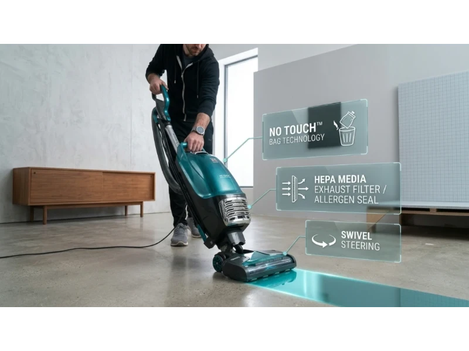

Choosing the right upright vacuum in 2026 feels harder than it should be. Every brand promises strong suction. Every model claims to handle pet hair. And when you start comparing specs like watts, air watts, HEPA filters, and brush roll tech, it quickly turns into a mess of confusing details.
You don't just want a vacuum that looks good on paper. You want something that actually works in real homes — thick carpets, long hair, pet fur, tight corners, stairs. That's where most vacuums fail.
This guide cuts through the noise. Instead of repeating generic claims, it focuses on what people actually care about: does it handle long hair without tangling, will it feel too heavy after 10 minutes, is the filtration truly sealed or just marketing, and which upright vacuum fits your specific situation.
Top 5 Best Upright Vacuums
These five models stand out in 2026 because they consistently solve real user problems. They were chosen based on suction performance, usability, maintenance, and what people actually complain about after buying. Here are the top 5 best upright vacuums:
- Shark Stratos Upright (AZ3000 / NZ860) — Best Overall Upright Vacuum
- Dyson Ball Animal 3 — Best for Deep Carpet Cleaning
- Shark Navigator Lift-Away (NV352/360) — Best Budget Upright Vacuum
- Kenmore Intuition Bagged (BU4022) — Best for Allergy-Sensitive Users
- Bissell Pet Hair Eraser Turbo (2475) — Best for Pet Owners
Now let's take a closer look at these vacuums.
1. Shark Stratos Upright (AZ3000 / NZ860) — Best Overall Upright Vacuum
This model is often seen as the most balanced upright vacuum in 2026. It combines strong suction, modern brush technology, and practical features that solve common cleaning frustrations — especially for homes with pets and long hair. The Shark Stratos is built for real-world use: not just about raw power, but about how that power is applied across carpets, hard floors, and tight spaces.
Key Specs
With around 1416 watts, this is one of the strongest upright vacuums Shark has made. But raw power alone doesn't tell the full story. What matters is how effectively it pulls dirt from deep carpets, hair trapped in fibers, and dust along edges — and in testing, this model performs consistently across all three. It doesn't struggle when moving from tile to carpet, which is where cheaper vacuums often lose efficiency.
The PowerFins HairPro system is one of the biggest practical upgrades here. Instead of stiff bristles, it uses flexible fins that grip hair better, prevent wrapping, and maintain contact with the floor. In real use, this means less maintenance and more consistent cleaning — a real fix for the most common frustration with upright vacuums.
The built-in odor neutralizer cartridge helps reduce bad smells, especially from pet hair and dust buildup. Honest caveat: the cartridge usually lasts 1 to 3 months and doesn't remove odors completely — it mainly reduces them. For pet owners, it still makes a noticeable difference.
At 16.7 lbs it's not a light vacuum, but Shark balances this with smooth swivel steering and a stable wheel design. The real advantage comes from the Lift-Away pod, which weighs around 8 lbs — making it much easier to clean stairs, reach under furniture, and handle tight spaces.
- PowerFins HairPro significantly reduces hair tangling
- Strong consistent suction across carpet and hard floors
- Lift-Away pod at ~8 lbs for stairs and tight spaces
- Built-in odor neutralizer for pet homes
- Heavier than budget models at 16.7 lbs
- Replacement odor cartridges add recurring cost
- Hose reach shorter than some competitors (6 ft)

2. Dyson Ball Animal 3 — Best for Deep Carpet Cleaning
This upright vacuum is built for one thing: maximum cleaning power on carpets. If your main problem is deep dirt, embedded pet hair, or dust trapped inside thick rugs, this is where the Dyson stands out. It focuses less on convenience and more on raw performance — designed for users who care more about deep cleaning than lightweight handling.
Key Specs
With 290 air watts, this model delivers the highest suction in this group. That power shows up most clearly on thick carpets, high-traffic areas, and homes with heavy pet shedding — it pulls dirt that other vacuums leave behind, especially from dense carpet fibers.
Older Dyson models were known for getting "stuck" on plush carpets because they sealed too tightly against the surface. The Ball Animal 3 fixes that with a 3-mode adjustable floorhead slider, letting you switch between low pile, medium, and thick carpet modes. Instead of fighting the vacuum, you adjust it to glide smoothly — and it actually works in real use.
The fully sealed HEPA system filters air before it leaves the vacuum, preventing dust from leaking back into the room. This makes it a strong choice for allergy-sensitive users and homes with fine dust or dander.
At 17.3 lbs, this is the heaviest model in this guide. The ball design helps with turning, but it doesn't reduce overall bulk. The hose is also stiff — when you stretch it, it can pull the vacuum toward you, making above-floor cleaning less stable. A small issue that becomes frustrating over time, especially when cleaning furniture often.
- Highest suction at 290 AW — best deep carpet cleaning
- Fully sealed whole-machine HEPA filtration
- 3-mode adjustable floorhead prevents carpet stall
- Longest cord and hose reach (35 ft / 15 ft)
- Heaviest model at 17.3 lbs
- Stiff hose makes above-floor cleaning awkward
- Not ideal for quick or lightweight cleaning sessions

3. Shark Navigator Lift-Away (NV352/360) — Best Budget Upright Vacuum
This is the model people choose when they want something simple, reliable, and affordable without sacrificing core performance. The Navigator has been around for years, and there's a reason it still shows up in top lists — it does the basics well with good suction, easy handling, and proven reliability.
Key Specs
Depending on the version, it weighs between 12.5 to 14 lbs — making it easier to carry and less tiring for longer cleaning sessions. For many users, this alone is a deciding factor over heavier premium models.
A common question is whether this model has HEPA filtration. The answer is yes — but only in Complete Seal versions. Non-sealed versions can leak fine dust, so allergy users need to confirm the exact variant before buying. This is an important distinction that many guides skip over.
The dustbin holds about 1.1 quarts, smaller than higher-end models, meaning more frequent emptying. It's quick and simple to do, but something to know upfront. Unlike newer Shark models, this one does not include Anti-Hair Wrap technology — hair will wrap around the brush roll and require manual cleaning. For households with long hair, this is a real maintenance task, not a minor inconvenience.
Like the Stratos, it includes a Lift-Away feature for stairs, furniture, and tight spaces, which adds real versatility even at this price point.
- Lightweight at 12.5–14 lbs, easier for long sessions
- Proven reliability at an affordable price
- Lift-Away feature included despite lower cost
- HEPA filtration available in Complete Seal versions
- No Anti-Hair Wrap — brush roll needs manual cleaning
- Smaller 1.1-quart dustbin requires frequent emptying
- Basic feature set compared to newer models

4. Kenmore Intuition Bagged (BU4022) — Best for Allergy-Sensitive Users
This model focuses on something many modern vacuums ignore: clean and mess-free dust disposal. Most vacuums today are bagless, which sounds convenient, but emptying the bin can release dust back into the air. The Kenmore Intuition solves that problem with a no-touch bag change system — the main reason people choose this model.
Key Specs
With a one-button bag eject system, you don't touch the dust, you don't see debris flying out, and the process stays clean and contained. For users sensitive to dust, this is a significant advantage over bagless designs.
It uses a dual-motor system — one motor for suction, one for the brush roll — which helps maintain consistent cleaning performance, especially on carpets. At around 14 lbs, it's surprisingly light for a bagged vacuum, making it easier to carry and use for longer sessions.
The HEPA bag system improves filtration, but comes with a real trade-off: replacement bags cost around $2 to $4 each, and frequency depends on usage. Over a year, this becomes a recurring cost that users actively consider before buying. If clean disposal is the priority, the system is worth it — but go in with eyes open about the ongoing expense.
- One-button no-touch bag eject — zero dust exposure
- HEPA bag filtration for allergy-sensitive users
- Dual motors for consistent suction and brush performance
- Lighter than expected at ~14 lbs
- Ongoing cost of replacement HEPA bags ($2–$4 each)
- Fewer modern features compared to bagless models

5. Bissell Pet Hair Eraser Turbo (2475) — Best for Pet Owners
This vacuum is designed specifically for one type of user: pet owners dealing with constant shedding. Unlike general-purpose vacuums, it focuses on tools and features that handle pet hair more effectively — particularly on furniture and upholstery where other uprights fall short.
Key Specs
The tangle-free brush roll reduces hair wrap and requires less manual cleaning. While Shark's PowerFins system is more advanced, Bissell still performs well in daily use and handles most pet hair without the constant maintenance traditional brush rolls demand.
Where this vacuum really shines is the Pet TurboEraser tool, designed specifically for sofas, cushions, and pet beds. It pulls embedded hair that standard attachments often miss — for homes with pets on furniture, this makes a noticeable difference that no general-purpose attachment replicates.
The quick-release wand makes switching to above-floor cleaning easier, improving usability for stairs, corners, and tight spaces. The dustbin holds about 0.75 liters, which is small — in homes with heavy shedding, expect to empty it frequently.
The SmartSeal Allergen System improves filtration, but it is not fully sealed to the same standard as Dyson. Febreze filters are optional and not built in, so odor control requires an added purchase. For users who want allergen-focused performance, the Dyson or Kenmore are stronger choices.
- Pet TurboEraser tool excels on sofas and pet beds
- Tangle-free brush roll reduces maintenance
- Quick-release wand for fast above-floor switching
- Strong value specifically for pet-focused cleaning
- Small 0.75 L dustbin needs frequent emptying
- Filtration not as advanced as Dyson or Kenmore
- Febreze odor filters are optional add-ons, not built in
How to Choose the Right Upright Vacuum
If You Have Thick Carpets
Go with the Dyson Ball Animal 3. It has the strongest suction in this group at 290 AW, pulls deep debris better than others, and includes sealed HEPA filtration for allergens. Keep in mind it's heavy and the hose is stiff — it's built for performance, not portability.
If You Have Pets and Long Hair
Both the Shark Stratos and Bissell Pet Hair Eraser Turbo handle hair better than traditional brush systems. Stratos reduces tangles significantly and is better overall for floors. Bissell is more targeted for furniture and pet zones. If you want less maintenance, Stratos is the stronger overall pick.
If You Want a Budget-Friendly Everyday Vacuum
The Shark Navigator Lift-Away covers basic cleaning needs well, is lightweight and easy to use, and has proven long-term reliability. Just know upfront: you will clean hair from the brush roll manually, and the dustbin is smaller than premium models.
If You Care About Clean, No-Dust Disposal
The Kenmore Intuition Bagged keeps dust fully contained, improves filtration through HEPA bags, and is ideal for allergy-sensitive users. The trade-off is the ongoing cost of replacement bags — factor that into your decision.
If You Want Balanced Performance Without Overthinking
The Shark Stratos Upright is the most balanced option. It handles most floor types well, reduces common issues like hair wrap and odor buildup, and sits in the middle of performance and practicality for most households.
Comparison: Top 5 Upright Vacuums Side by Side
| Model | Cord / Hose Reach | Weight | Filtration | Hair Handling | Best For |
|---|---|---|---|---|---|
| Shark Stratos Upright | 30 ft / 6 ft | 16.7 lbs | Advanced | PowerFins HairPro | Balanced all-rounder |
| Dyson Ball Animal 3 | 35 ft / 15 ft | 17.3 lbs | Sealed HEPA | Good, some manual cleaning | Deep carpet cleaning |
| Shark Navigator Lift-Away | 25 ft / 7 ft | 12.5–14 lbs | HEPA (sealed versions) | Manual brush cleaning required | Budget-friendly everyday use |
| Kenmore Intuition Bagged | 30 ft / 7 ft | ~14 lbs | HEPA bags | Standard | Allergy-sensitive users |
| Bissell Pet Hair Eraser Turbo | — | ~15 lbs | SmartSeal Allergen | Tangle-free brush roll | Pet owners / furniture |
Frequently Asked Questions
Which upright vacuum is best for pet hair in 2026?
Shark Stratos and Bissell Pet Hair Eraser Turbo both handle pet hair well. Stratos is better for floors, while Bissell performs better on furniture and upholstery thanks to the Pet TurboEraser tool.
Is Dyson Ball Animal 3 too heavy for daily use?
It is heavier than most models at around 17.3 lbs. It works best for users who prioritize deep cleaning over portability — ideal for dedicated carpet cleaning sessions rather than quick daily passes.
Do bagged vacuums perform better than bagless ones?
Not always. Bagged models like the Kenmore Intuition offer cleaner disposal and better allergen control, but bagless models are more convenient and cost less over time. The right choice depends on how sensitive you are to dust exposure.
Which vacuum is easiest to maintain?
Shark Stratos is the easiest overall due to its anti-hair wrap system and simple bin emptying. Kenmore is also low-mess but requires bag replacements. Navigator requires the most manual brush roll cleaning of the five.
Does the Shark Navigator have HEPA filtration?
Yes, but only in Complete Seal versions. Non-sealed versions can leak fine dust back into the air. If filtration matters to you, confirm the exact model variant before buying.
What is the most balanced upright vacuum?
Shark Stratos Upright is the most balanced option in terms of suction, usability, and maintenance for most households. It handles carpets, hard floors, hair, and odors without requiring specialization in one area.
Conclusion & Final Recommendations
No upright vacuum is perfect, but each one in this guide solves a specific problem better than the others.
For maximum suction and deep carpet cleaning, the Dyson Ball Animal 3 leads the group. For the most balanced everyday performance with smart anti-hair features, the Shark Stratos is the strongest overall pick. For a dependable budget option with solid reliability, the Shark Navigator holds up well. For clean, no-dust disposal and allergen control, the Kenmore Intuition Bagged is the clear choice. And for pet-focused furniture cleaning, the Bissell Pet Hair Eraser Turbo brings tools no general-purpose vacuum matches.
Match the vacuum to what your home actually needs — the type of floors you have, how much hair or pet fur you deal with, how long you clean in one session, and how much maintenance you're willing to handle. Get that match right, and the choice becomes straightforward.